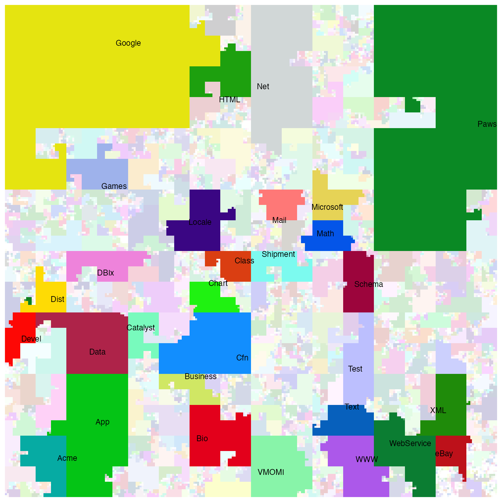

vignettes/cpan.Rmd
cpan.RmdThere is a nice visualization of CPAN (Perl) modules with the Hilbert curve on http://mapofcpan.org/. In this article, I will demonstrate how to make the plot with the HilbertCurve package.
We first read the list of CPAN modules. The information is in the 02packages.details.txt file which can be directly accessed with the following link:
df = read.table(url("https://www.cpan.org/modules/02packages.details.txt"), skip = 9)
head(df)## V1 V2 V3
## 1 A1z::Html 0.04 C/CE/CEEJAY/A1z-Html-0.04.tar.gz
## 2 A1z::HTML5::Template 0.22 C/CE/CEEJAY/A1z-HTML5-Template-0.22.tar.gz
## 3 A_Third_Package undef C/CL/CLEMBURG/Test-Unit-0.13.tar.gz
## 4 AAA::Demo undef J/JW/JWACH/Apache-FastForward-1.1.tar.gz
## 5 AAA::eBay undef J/JW/JWACH/Apache-FastForward-1.1.tar.gz
## 6 AAAA undef P/PR/PRBRENAN/Data-Table-Text-20210818.tar.gzThe modules are listed in the first column. We also sort it alphabetically.
all_modules = sort(df[, 1])We take the “namespace” of the module which is the string before the first “::”:
ns = gsub("::.*$", "", all_modules)Next we will put every value in ns in a Hilbert curve. First let’s convert it into an Rle object:
Now in r, each element corresponds to an unique namespace in ns, and the length or the width of the namespace in ns is also calculated. Let’s get these values:
s = start(r) # start position of each ns in r
e = end(r) # end position of each ns in r
w = width(r) # width of each ns in r
labels = runValue(r) # corresponding labelsNow we can visualize it via the HilbertCurve package. We wil highlight the top 30 namespaces with the largest number of modules.
library(HilbertCurve)
ind = order(w, decreasing = TRUE)[1:30]
w_cutoff = w[ ind[30] ]
set.seed(123) # because we have randomm colors
hc = HilbertCurve(0, length(all_modules), level = 8, mode = "pixel")
hc_layer(hc, x1 = s, x2 = e,
col = circlize::rand_color(nrun(r), transparency = ifelse(w >= w_cutoff, 0, 0.8)))
hc_text(hc, x1 = s[ind], x2 = e[ind], labels = labels[ind],
gp = gpar(fontsize = 9))
## R version 4.3.1 (2023-06-16)
## Platform: x86_64-apple-darwin20 (64-bit)
## Running under: macOS Ventura 13.2.1
##
## Matrix products: default
## BLAS: /Library/Frameworks/R.framework/Versions/4.3-x86_64/Resources/lib/libRblas.0.dylib
## LAPACK: /Library/Frameworks/R.framework/Versions/4.3-x86_64/Resources/lib/libRlapack.dylib; LAPACK version 3.11.0
##
## locale:
## [1] C/UTF-8/C/C/C/C
##
## time zone: Europe/Berlin
## tzcode source: internal
##
## attached base packages:
## [1] grid stats4 stats graphics grDevices utils datasets
## [8] methods base
##
## other attached packages:
## [1] HilbertCurve_1.33.1 IRanges_2.36.0 S4Vectors_0.40.2
## [4] BiocGenerics_0.48.1 knitr_1.44
##
## loaded via a namespace (and not attached):
## [1] jsonlite_1.8.8 compiler_4.3.1 Rcpp_1.0.11
## [4] stringr_1.5.0 GenomicRanges_1.52.1 bitops_1.0-7
## [7] jquerylib_0.1.4 png_0.1-8 systemfonts_1.0.5
## [10] textshaping_0.3.7 yaml_2.3.7 fastmap_1.1.1
## [13] lattice_0.21-9 XVector_0.40.0 R6_2.5.1
## [16] shape_1.4.6 GenomeInfoDb_1.36.4 circlize_0.4.15
## [19] desc_1.4.2 rprojroot_2.0.3 GenomeInfoDbData_1.2.10
## [22] polylabelr_0.2.0 bslib_0.6.1 HilbertVis_1.58.0
## [25] rlang_1.1.2 cachem_1.0.8 stringi_1.7.12
## [28] xfun_0.40 GlobalOptions_0.1.2 fs_1.6.3
## [31] sass_0.4.8 memoise_2.0.1 cli_3.6.2
## [34] pkgdown_2.0.7 magrittr_2.0.3 zlibbioc_1.46.0
## [37] digest_0.6.33 lifecycle_1.0.4 vctrs_0.6.4
## [40] evaluate_0.22 glue_1.6.2 ragg_1.2.6
## [43] RCurl_1.98-1.12 colorspace_2.1-0 rmarkdown_2.25
## [46] purrr_1.0.2 tools_4.3.1 htmltools_0.5.7